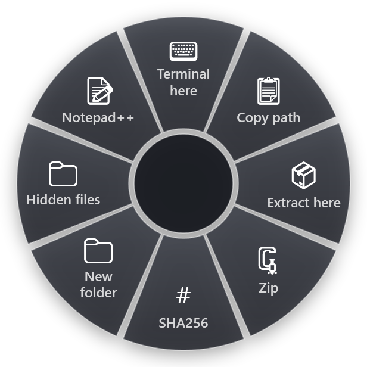

File Explorer is the program people use all day without thinking of it as a program. That is exactly why its shortcuts are worth learning: a few keys replace a lot of small clicks on folders, paths and menus.
Every shortcut below is from Microsoft's "Keyboard shortcuts in Windows" page, which has separate tabs for Windows 11 and Windows 10. Most keys are the same in both. The differences are marked.
Opening and closing
- Win+E opens File Explorer.
- Ctrl+N opens a new Explorer window.
- Ctrl+T opens a new tab and switches to it. Windows 11 only.
- Ctrl+W closes the active tab (in Windows 10, the window).
- Ctrl+Tab and Ctrl+Shift+Tab move to the next and previous tab. Windows 11 only.
Windows 10 has no tabs in Explorer, so the tab keys need an up-to-date Windows 11.
Getting around
- Alt+Up goes up one level, to the parent folder.
- Alt+Left or Backspace goes back to the previous folder.
- Alt+Right goes forward again.
- Ctrl+L, Alt+D or F4 select the address bar. Type or paste a path and press Enter.
- Ctrl+E or Ctrl+F select the search box.
- Home and End jump to the first and last item.
- F6 cycles through the parts of the window, such as the address bar, the navigation pane and the file list.
- Ctrl+Shift+E expands the navigation pane tree to show the folders above the current one.
The address bar trick saves a lot of clicking. To get to a deep folder, press Ctrl+L, paste the path from an email or a chat, and press Enter. It works with network paths too, such as \\server\share.
Working with files
- Ctrl+Shift+N creates a new folder, ready to be named.
- F2 renames the selected item.
- Alt+Enter opens the Properties of the selected item.
- Shift+F10 opens the right-click menu for the selection.
- Ctrl+D or Delete moves the selection to the Recycle Bin.
- Shift+Delete deletes it permanently, without the Recycle Bin. Use with care.
- F5 refreshes the window, for when a new file does not appear.
- Ctrl+C, Ctrl+X, Ctrl+V copy, cut and paste files as they do text. Ctrl+Z undoes.
Panes and view
- Alt+P shows or hides the preview pane, so you can look into a PDF, picture or Office file without opening it.
- Alt+Shift+P shows or hides the details pane.
- Ctrl with the mouse wheel changes the size and layout of the icons.
- F11 maximizes or restores the window.
Windows shortcuts that work well with Explorer
- Win+V opens clipboard history, so you can paste a path or a name you copied a few minutes ago. The first time, Windows asks to turn it on.
- Win+Shift+S takes a screenshot of a region.
- Win+R opens Run, where a path or a folder name such as %APPDATA% opens straight in Explorer.
- Win+X opens the Quick Link menu, with Terminal, Device Manager and Disk Management.
- Win+D shows the desktop.
How to remember them
- Alt plus an arrow moves. Up for the parent folder, Left for back, Right for forward. Like a browser.
- The tab keys are the browser's. Ctrl+T, Ctrl+W and Ctrl+Tab do in Explorer what they do in Chrome or Edge.
- N is new. Ctrl+N is a new window, Ctrl+Shift+N a new folder.
- P is for pane. Alt+P for preview, Alt+Shift+P for details.
- F2 is rename everywhere. Explorer, Excel cells, VS Code symbols. Learn it once.
What Explorer cannot do with a key
Some jobs come up every day in Explorer and have no shortcut at all: copying the full path of a file in quotes, opening a terminal in the current folder, zipping a few files, extracting an archive right here, getting the hash of a download, showing hidden files for a moment. Windows 11 has Copy as path in the right-click menu, but most of the rest is buried in submenus or needs another program.
RadialDeck is the radial menu for Windows that we make. When Explorer is in front, your hotkey opens an Explorer ring instead of your usual one, and the slices act on the files you have selected. Hold, flick, release.

The ready-made Explorer set has Terminal in this folder, Copy path of selected file, Extract archive here, Zip selected files, SHA256 of selected file, New folder, Show / hide hidden files and Open in Notepad++. The zip and extract slices use 7-Zip, so it needs to be installed.
The gallery has more slices for files: Copy path in quotes, Copy file name, Copy file name without extension, Copy the containing folder, Rename to lowercase, Put today's date in front of the name, Word file → PDF, Excel file → PDF, Merge selected PDFs, Selected images → one PDF, Size of the selection, Open with… and File properties. If you use Everything for search, Search this folder with Everything opens it on the current folder.
Quick reference
- Open: Win+E, Ctrl+N, Ctrl+T (Windows 11)
- Move: Alt+Up, Alt+Left, Ctrl+L, Ctrl+E
- Files: Ctrl+Shift+N, F2, Alt+Enter, Shift+Delete
- View: Alt+P, Alt+Shift+P, Ctrl + mouse wheel
- Windows: Win+V, Win+R, Win+X
RadialDeck is free for two rings and has a 14-day trial of Pro, which adds a ring per program such as the Explorer ring above. It is in the Microsoft Store.
Try it in RadialDeck
Free for two rings, with a 14-day trial of everything in Pro. Windows 10 and 11, from the Microsoft Store.